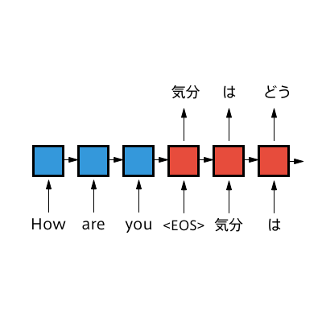

Sequence-to-Sequence（Seq2Seq）model
The Sequence-to-Sequence (Seq2Seq) model is a model with a mechanism that takes a sequence as input and outputs a sequence.
It is sometimes called an Encoder-Decoder model because it uses an RNN to convert the input sequence into a vector (=Encoder) and then uses another RNN to generate a sequence from that vector (=Decoder).
In recent years, various models based on this mechanism have been proposed for natural language processing using deep learning. For example, in the task of translation, it is now possible to handle problems with different word order and length in different languages, which were difficult to handle with a simple RNN.
Other applications have also been proposed, such as image caption generation, which generates a description of an image from an image input, but for this article we will use translation as an example.
class Vocab(object):
def __init__(self, word2id={}):
"""
word2id: Dictionary to convert word (str) to index (int)
id2word: Dictionary to convert index (int) to word (str)
"""
self.word2id = dict(word2id)
self.id2word = {v: k for k, v in self.word2id.items()}
def build_vocab(self, sentences, min_count=1):
#Create a dictionary of the number of occurrences for each word
word_counter = {}
for sentence in sentences:
for word in sentence:
word_counter[word] = word_counter.get(word, 0) + 1
#Only add words that occur more than min_count times to the vocabulary
for word, count in sorted(word_counter.items(), key=lambda x: -x[1]):
if count < min_count:
break
_id = len(self.word2id)
self.word2id.setdefault(word, _id)
self.id2word[_id] = word import random
import numpy as np
from sklearn.model_selection import train_test_split
from sklearn.utils import shuffle
from nltk import bleu_score
import torch
import torch.nn as nn
import torch.nn.functional as F
import torch.optim as optim
from torch.nn.utils.rnn import pad_packed_sequence, pack_padded_sequence
# Device Configurations
device = torch.device("cuda" if torch.cuda.is_available() else "cpu")
torch.manual_seed(1)
random_state = 421.Prepare the dataset
We are going to use "small_parallel_enja: 50k En/Ja Parallel Corpus for Testing SMT Methods"( https://github.com/odashi/small_parallel_enja ) extracted from Tanaka Corpus ( http://www.edrdg.org/wiki/index.php/Tanaka_Corpus )
The contents of train.en and train.ja are as follows.
! head -5 ./data/train.eni can 't tell who will arrive first .
many animals have been destroyed by men .
i 'm in the tennis club .
emi looks happy .
please bear this fact in mind .
! head -5 ./data/train.ja誰 が 一番 に 着 く か 私 に は 分か り ま せ ん 。
多く の 動物 が 人間 に よ っ て 滅ぼ さ れ た 。
私 は テニス 部員 で す 。
エミ は 幸せ そう に 見え ま す 。
この 事実 を 心 に 留め て お い て 下さ い 。
1.1 Data loading and word segmentation
train_X = load_data('./data/train.en')
train_Y = load_data('./data/train.ja')
# Reduce data size for this exercises
train_X = train_X[:len(train_X)//2]
train_Y = train_Y[:len(train_Y)//2]# Split into training and validation data
train_X, valid_X, train_Y, valid_Y = train_test_split(train_X, train_Y, test_size=0.2, random_state=random_state)
print(train_X[0])['my', 'father', 'is', 'very', 'angry', 'with', 'me', '.']
1.2 Creating a Word Dictionary
Assign an ID to each word that appears in the data set.
# Special tokens should be predefined.
PAD_TOKEN = '<PAD>' # Used to fill in the end of a short series during batch processing （Padding）
BOS_TOKEN = '<S>' # Represents the beginning of a series （Beggining of sentence）
EOS_TOKEN = '</S>' # Represents the end of a series （End of sentence）
UNK_TOKEN = '<UNK>' # Indicates a word that does not exist in the vocabulary （Unknown）
PAD = 0
BOS = 1
EOS = 2
UNK = 3MIN_COUNT = 2 # Minimum number of occurrences of the words to be included in the vocabulary
# Set initial values for dictionary to convert words to IDs
word2id = {
PAD_TOKEN: PAD,
BOS_TOKEN: BOS,
EOS_TOKEN: EOS,
UNK_TOKEN: UNK,
}
# Create a word dictionary
vocab_X = Vocab(word2id=word2id)
vocab_Y = Vocab(word2id=word2id)
vocab_X.build_vocab(train_X, min_count=MIN_COUNT)
vocab_Y.build_vocab(train_Y, min_count=MIN_COUNT)vocab_size_X = len(vocab_X.id2word)
vocab_size_Y = len(vocab_Y.id2word)
print('Number of vocabulary in input language：', vocab_size_X)
print('Number of vocabulary words in output language：', vocab_size_Y)Number of vocabulary in input language：2698
Number of vocabulary words in output language：3051
2.Conversion to tensor
2.1 Conversion to ID
To let the model recognize sentences, it converts sentences into a list of word IDs based on a word dictionary created in Vocab.
def sentence_to_ids(vocab, sentence):
# Function to convert a list of words (str) into a list of IDs (int)
ids = [vocab.word2id.get(word, UNK) for word in sentence]
ids += [EOS] # add EOS
return idstrain_X = [sentence_to_ids(vocab_X, sentence) for sentence in train_X]
train_Y = [sentence_to_ids(vocab_Y, sentence) for sentence in train_Y]
valid_X = [sentence_to_ids(vocab_X, sentence) for sentence in valid_X]
valid_Y = [sentence_to_ids(vocab_Y, sentence) for sentence in valid_Y]print(train_X[0])[18, 86, 9, 52, 342, 32, 22, 4, 2]
2.2 Define dataLoader
Define a data loader to retrieve batches from the data set.
- In this case, to allow multiple series of different lengths to be handled in parallel in a batch, the tail of the shorter series is padded with a specific symbol (e.g., <PAD>) to match the length of the longest series in the batch.
- We get a matrix of size (batch_size, max_length), but when actually training the model, we will advance each time across batches, so we transpose it and change it to the form (max_length, batch_size). (This is not necessary when using the batch_first=True option.)
def pad_seq(seq, max_length):
# Padding at the end so that the series (seq) has the specified sentence length (max_length)
res = seq + [PAD for i in range(max_length - len(seq))]
return res
class DataLoader(object):
def __init__(self, X, Y, batch_size, shuffle=False):
"""
:param X: list, List of input language sentences (list of word IDs)
:param Y: list, List of output language sentences (list of word IDs)
:param batch_size: int, batch size
:param shuffle: bool, Whether to shuffle the sample order
"""
self.data = list(zip(X, Y))
self.batch_size = batch_size
self.shuffle = shuffle
self.start_index = 0
self.reset()
def reset(self):
if self.shuffle: # Shuffle the sample order
self.data = shuffle(self.data, random_state=random_state)
self.start_index = 0 # Initialize pointer position
def __iter__(self):
return self
def __next__(self):
# Initialize when the pointer reaches the end.
if self.start_index >= len(self.data):
self.reset()
raise StopIteration()
# Retrieve batches
seqs_X, seqs_Y = zip(*self.data[self.start_index:self.start_index+self.batch_size])
# Sort series pairs by length of sentences in input series seqs_X (descending order)
seq_pairs = sorted(zip(seqs_X, seqs_Y), key=lambda p: len(p[0]), reverse=True)
seqs_X, seqs_Y = zip(*seq_pairs)
# Padding the end of short series
lengths_X = [len(s) for s in seqs_X] # Also used in Encoder's pack_padded_sequence described below.
lengths_Y = [len(s) for s in seqs_Y]
max_length_X = max(lengths_X)
max_length_Y = max(lengths_Y)
padded_X = [pad_seq(s, max_length_X) for s in seqs_X]
padded_Y = [pad_seq(s, max_length_Y) for s in seqs_Y]
# Convert to tensor and transpose
batch_X = torch.tensor(padded_X, dtype=torch.long, device=device).transpose(0, 1)
batch_Y = torch.tensor(padded_Y, dtype=torch.long, device=device).transpose(0, 1)
# Update pointer
self.start_index += self.batch_size
return batch_X, batch_Y, lengths_X
3.Building the model
Define the Encoder and Decoder RNNs.
PackedSequence
In pytorch's RNN, a class called PackedSequence can be used to represent series so that batches of variable-length series can be computed efficiently.
By converting the tensor of the input batch into an instance of this PackedSeauence and then inputting it to the RNN, the padding part can be omitted from the calculation, making the calculation more efficient. (Although not used in this article, this also eliminates the need to consider the direction of padding when creating the input for a bidirectional RNN.)
To create a PackedSequence, first perform padding for batches of different series lengths.
Now save the series lengths (lengths) of each sample before padding.
# Create a batch consisting of three samples with series lengths of 4, 3, and 2, respectively
batch = [[1,2,3,4], [5,6,7], [8,9]]
lengths = [len(sample) for sample in batch]
print('Series length for each sample:', lengths)
print()
# Padding each sample to fit the maximum series length
_max_length = max(lengths)
padded = torch.tensor([pad_seq(sample, _max_length) for sample in batch])
padded = padded.transpose(0, 1) # Transpose to (max_length, batch_size)
print('Padded tensor:\n', padded)
print('Padded Tensor Size:', padded.size())
print()
Series length for each sample: [4, 3, 2]
Padded tensor:
tensor([[1, 5, 8],
[2, 6, 9],
[3, 7, 0],
[4, 0, 0]])
Padded Tensor Size: torch.Size([4, 3])
Next, by feeding the padded tensor (padded) and the original series lengths (lengths) of each sample to the function torch.cnn.utils.rnn.pack_padded_sequence, an instance of a PackedSequence with elements data and batch_sizes An instance of a PackedSequence(packed) can be created.
- data: Vector holding only non-PAD values of the tensor
- batch_sizes: vector of the number of batches that need to be calculated (= have not reached PAD) at each time
# Converted to PackedSequence (applied before the tensor is input to the RNN)
packed = pack_padded_sequence(padded, lengths=lengths) # Also give the series length for each sample
print('Instance of PackedSequence:\n', packed)
# Instances with non-PAD values of the tensor (data) and the number of batches (batch_sizes) that need to be computed at each time (= PAD not reached)
print()Instance of PackedSequence: PackedSequence(data=tensor([1, 5, 8, 2, 6, 9, 3, 7, 4]), batch_sizes=tensor([3, 3, 2, 1]), sorted_indices=None, unsorted_indices=None)
The obtained PackedSequence instance is input into the RNN. (Omitted here.)
Since the tensor output from the RNN is still an instance of a PackedSeauence, it is converted back to a normal tensor by the function torch.nn.utils.rnn.pad_packed_sequence to connect it to the later stage of the calculation.
# Input a PackedSequence instance to RNN (omitted here)
output = packed
# Return to tensor (applied to RNN output)
output, _length = pad_packed_sequence(output) # Returns the original tensor including PAD and the series length of each sample
print('Original tensor including PAD:\n', output)
print('Series length for each sample:', _length)Original tensor including PAD:
tensor([[1, 5, 8],
[2, 6, 9],
[3, 7, 0],
[4, 0, 0]])
Series length for each sample: tensor([4, 3, 2])
Encoder
This time, when processing the batch on the Encoder side, we convert the tensor to a PackedSequence using the pack_padded_sequence function, and then convert it back to a tensor using the pad_packed_sequence function after processing is complete.
class Encoder(nn.Module):
def __init__(self, input_size, hidden_size):
"""
:param input_size: int, Number of Input language vocabulary
:param hidden_size: int, Number of hidden layer units
"""
super(Encoder, self).__init__()
self.hidden_size = hidden_size
self.embedding = nn.Embedding(input_size, hidden_size, padding_idx=PAD)
self.gru = nn.GRU(hidden_size, hidden_size)
def forward(self, seqs, input_lengths, hidden=None):
"""
:param seqs: tensor, Input batches, size=(max_length, batch_size)
:param input_lengths: Sentence length for each sample of a batch of inputs
:param hidden: tensor, Initial value of hidden state, initialized to 0 if None
:return output: tensor, Encoder Output, size=(max_length, batch_size, hidden_size)
:return hidden: tensor, Encoder hidden state, size=(1, batch_size, hidden_size)
"""
emb = self.embedding(seqs)
packed = pack_padded_sequence(emb, input_lengths)
output, hidden = self.gru(packed, hidden)
output, _ = pad_packed_sequence(output)
return output, hiddenDecoder
This time, the Decoder does not perform padding, etc., so there is no problem with input to the RNN as a normal tensor.
class Decoder(nn.Module):
def __init__(self, hidden_size, output_size):
"""
:param hidden_size: int, Number of hidden layer units
:param output_size: int, Number of vocabulary words in output language
:param dropout: float, drop-out rate
"""
super(Decoder, self).__init__()
self.hidden_size = hidden_size
self.output_size = output_size
self.embedding = nn.Embedding(output_size, hidden_size, padding_idx=PAD)
self.gru = nn.GRU(hidden_size, hidden_size)
self.out = nn.Linear(hidden_size, output_size)
def forward(self, seqs, hidden):
"""
:param seqs: tensor, Input batches, size=(1, batch_size)
:param hidden: tensor, Initial value of hidden state, If None, initialized to 0
:return output: tensor, Output of Decoder, size=(1, batch_size, output_size)
:return hidden: tensor, Decoder hidden state, size=(1, batch_size, hidden_size)
"""
emb = self.embedding(seqs)
output, hidden = self.gru(emb, hidden)
output = self.out(output)
return output, hiddenEncoderDecoder
Define an EncoderDecoder class that summarizes a series of processes using the Encoder and Decoder defined above.
Here are some points about processing on the Decoder side.
In RNNs, the output at time t can be the input at time t+1, but training the Decoder in this way leads to a chain of increasing errors, causing problems with unstable training and slow convergence.
To counter this problem, there is a technique called Teacher Forcing. This technique is to use the target series (reference translation) as input to the Decoder during training. This has the advantage of stabilizing training and speeding up convergence, but it also has the disadvantage that during evaluation, the target series generated by the decoder at the previous time is used, resulting in a distribution that differs from the one used during training.
An extension of Teacher Forcing is Scheduled Sampling, which probabilistically samples the target series as input or the generated results as input.
Scheduled Sampling is employed here, and the class is defined so that it can switch between taking the target series as input or the generated results based on a certain probability.
class EncoderDecoder(nn.Module):
"""Summarize Encoder and Decoder processing"""
def __init__(self, input_size, output_size, hidden_size):
"""
:param input_size: int, Number of words in input language
:param output_size: int, Number of words in output language
:param hidden_size: int, Number of hidden layer units
"""
super(EncoderDecoder, self).__init__()
self.encoder = Encoder(input_size, hidden_size)
self.decoder = Decoder(hidden_size, output_size)
def forward(self, batch_X, lengths_X, max_length, batch_Y=None, use_teacher_forcing=False):
"""
:param batch_X: tensor, Input series batch, size=(max_length, batch_size)
:param lengths_X: list, Sentence length for each sample in the batch of input series
:param max_length: int, Decoder maximum sentence length
:param batch_Y: tensor, Target series used by Decoder
:param use_teacher_forcing: Flag the target series as input in Decoder
:return decoder_outputs: tensor, Output of Decoder,
size=(max_length, batch_size, self.decoder.output_size)
"""
# Enter series in encoder (process multiple times at once)
_, encoder_hidden = self.encoder(batch_X, lengths_X)
_batch_size = batch_X.size(1)
# Define input of decoder and initial state of hidden layer
decoder_input = torch.tensor([BOS] * _batch_size, dtype=torch.long, device=device)
decoder_input = decoder_input.unsqueeze(0) # (1, batch_size)
decoder_hidden = encoder_hidden # Get Encoder's last hidden state
# Define holder for decoder output
decoder_outputs = torch.zeros(max_length, _batch_size, self.decoder.output_size, device=device)
# Process each time
for t in range(max_length):
decoder_output, decoder_hidden = self.decoder(decoder_input, decoder_hidden)
decoder_outputs[t] = decoder_output
# Determine the next input of the decoder
if use_teacher_forcing and batch_Y is not None: # Use target series
decoder_input = batch_Y[t].unsqueeze(0)
else: # Using its own output
decoder_input = decoder_output.max(-1)[1]
return decoder_outputs
4. Training
4.1 Definition of Loss Functions
Basically, cross-entropy is used as the loss function, but since padding results in <PAD> tokens at the end of the short series, a mask is applied to avoid calculating the loss in this area.
def masked_cross_entropy(logits, target):
"""
:param logits: torch.tensor(dtype=torch.float)
Output of Decoder。size=(max_seq_len, batch_size, output_size)
:param target: torch.tensor(dtype=torch.long)
Target Affiliation. size=(max_seq_len, batch_size)
:return loss: Losses masked by 0 for the PAD portion of target
"""
logits_flat = logits.view(-1, logits.size(-1)) # (max_seq_len * batch_size, output_size)
log_probs_flat = F.log_softmax(logits_flat, -1) # (max_seq_len * batch_size, output_size)
target_flat = target.view(-1, 1) # (max_seq_len * batch_size, 1)
# Retrieve only elements corresponding to the index of target from logits
losses_flat = -torch.gather(log_probs_flat, dim=1, index=target_flat) # (max_seq_len * batch_size, 1)
losses = losses_flat.view(*target.size()) # (max_seq_len, batch_size)
# Mask PAD to 0 and all others to 1 and get only the parts where the mask is 1.
mask = (target != PAD).float() # (max_seq_len, batch_size)
losses = losses * mask
loss = losses.sum()
return lossmce = nn.CrossEntropyLoss(reduction='sum' , ignore_index=PAD)
def masked_cross_entropy(logits, target):
return mce(logits.view(-1, logits.size(-1)), target.view(-1))4.2 Learning
# Hyperparameter settings
num_epochs = 10
batch_size = 64
lr = 1e-3 # Learning rate
teacher_forcing_rate = 0.2 # Probability of Teacher Forcing
ckpt_path = 'model.pth' # Path to store trained models
model_args = {
'input_size': vocab_size_X,
'output_size': vocab_size_Y,
'hidden_size': 256,}# Define data loader
train_dataloader = DataLoader(train_X, train_Y, batch_size=batch_size, shuffle=True)
valid_dataloader = DataLoader(valid_X, valid_Y, batch_size=batch_size, shuffle=False)
# Define Model and Optimizer
model = EncoderDecoder(**model_args).to(device)
optimizer = optim.Adam(model.parameters(), lr=lr)Define a function that actually calculates the loss function.
def compute_loss(batch_X, batch_Y, lengths_X, model, optimizer=None, is_train=True):
# Function to calculate the loss
model.train(is_train) # Switching between train/eval mode
# Teacher Forcing at a certain rate
use_teacher_forcing = is_train and (random.random() < teacher_forcing_rate)
max_length = batch_Y.size(0)
# inference
pred_Y = model(batch_X, lengths_X, max_length, batch_Y, use_teacher_forcing)
# Calculate loss function
loss = masked_cross_entropy(pred_Y.contiguous(), batch_Y.contiguous())
if is_train: # Parameters are updated during training
optimizer.zero_grad()
loss.backward()
optimizer.step()
batch_Y = batch_Y.transpose(0, 1).contiguous().data.cpu().tolist()
pred = pred_Y.max(dim=-1)[1].data.cpu().numpy().T.tolist()
return loss.item(), batch_Y, predHere, in addition to loss, BLEU is calculated as an indicator to evaluate the performance of the model to check the learning progress.
BLEU is one of the most common automatic evaluation metrics in the field of machine translation and is a measure based on the n-gram match rate between a pre-prepared (multiple) reference translation and the translation output by the machine translation model.
It can be easily calculated using NLTK (Natural Language Tool Kit), a library used in natural language processing and text mining.
def calc_bleu(refs, hyps):
"""
Function to calculate BLEU score
:param refs: list, Reference translation. List of lists of words (e.g. [['I', 'have', 'a', 'pen'], ...])
:param hyps: list, Model generated translations. List of lists of words (e.g. [['I', 'have', 'a', 'pen'], ...])
:return: float, BLEU score (0~100)
"""
refs = [[ref[:ref.index(EOS)]] for ref in refs]
hyps = [hyp[:hyp.index(EOS)] if EOS in hyp else hyp for hyp in hyps]
return 100 * bleu_score.corpus_bleu(refs, hyps)We are going to train the model
# Training
best_valid_bleu = 0.
for epoch in range(1, num_epochs+1):
train_loss = 0.
train_refs = []
train_hyps = []
valid_loss = 0.
valid_refs = []
valid_hyps = []
# train
for batch in train_dataloader:
batch_X, batch_Y, lengths_X = batch
loss, gold, pred = compute_loss(
batch_X, batch_Y, lengths_X, model, optimizer,
is_train=True
)
train_loss += loss
train_refs += gold
train_hyps += pred
# valid
for batch in valid_dataloader:
batch_X, batch_Y, lengths_X = batch
loss, gold, pred = compute_loss(
batch_X, batch_Y, lengths_X, model,
is_train=False
)
valid_loss += loss
valid_refs += gold
valid_hyps += pred
# Normalized by dividing loss by sample size
train_loss = np.sum(train_loss) / len(train_dataloader.data)
valid_loss = np.sum(valid_loss) / len(valid_dataloader.data)
# Calculate BLEU
train_bleu = calc_bleu(train_refs, train_hyps)
valid_bleu = calc_bleu(valid_refs, valid_hyps)
# Save model if BLEU improves with validation data
if valid_bleu > best_valid_bleu:
ckpt = model.state_dict()
torch.save(ckpt, ckpt_path)
best_valid_bleu = valid_bleu
print('Epoch {}: train_loss: {:5.2f} train_bleu: {:2.2f} valid_loss: {:5.2f} valid_bleu: {:2.2f}'.format(
epoch, train_loss, train_bleu, valid_loss, valid_bleu))
print('-'*80)5. Evaluation
# Loading a trained model
ckpt = torch.load(ckpt_path)
model.load_state_dict(ckpt)
model.eval()EncoderDecoder( (encoder): Encoder( (embedding): Embedding(2698, 256, padding_idx=0) (gru): GRU(256, 256) ) (decoder): Decoder( (embedding): Embedding(3051, 256, padding_idx=0) (gru): GRU(256, 256) (out): Linear(in_features=256, out_features=3051, bias=True) ) )
def ids_to_sentence(vocab, ids):
# Convert a list of IDs to a list of words
return [vocab.id2word[_id] for _id in ids]
def trim_eos(ids):
# Exclude words after EOS from the list of IDs
if EOS in ids:
return ids[:ids.index(EOS)]
else:
return ids# Loading test data
test_X = load_data('./data/dev.en')
test_Y = load_data('./data/dev.ja')
test_X = [sentence_to_ids(vocab_X, sentence) for sentence in test_X]
test_Y = [sentence_to_ids(vocab_Y, sentence) for sentence in test_Y]
test_dataloader = DataLoader(test_X, test_Y, batch_size=1, shuffle=False)
# Generation
batch_X, batch_Y, lengths_X = next(test_dataloader)
sentence_X = ' '.join(ids_to_sentence(vocab_X, batch_X.data.cpu().numpy()[:-1, 0]))
sentence_Y = ' '.join(ids_to_sentence(vocab_Y, batch_Y.data.cpu().numpy()[:-1, 0]))
print('src: {}'.format(sentence_X))
print('tgt: {}'.format(sentence_Y))
output = model(batch_X, lengths_X, max_length=20)
output = output.max(dim=-1)[1].view(-1).data.cpu().tolist()
output_sentence = ' '.join(ids_to_sentence(vocab_Y, trim_eos(output)))
print('out: {}'.format(output_sentence))
src: show your own business . tgt: 自分 の 事 を しろ 。 out: 仕事 を <UNK> し な い 。
# BLEU Calculation
test_dataloader = DataLoader(test_X, test_Y, batch_size=1, shuffle=False)
refs_list = []
hyp_list = []
for batch in test_dataloader:
batch_X, batch_Y, lengths_X = batch
pred_Y = model(batch_X, lengths_X, max_length=20)
pred = pred_Y.max(dim=-1)[1].view(-1).data.cpu().tolist()
refs = batch_Y.view(-1).data.cpu().tolist()
refs_list.append(refs)
hyp_list.append(pred)
bleu = calc_bleu(refs_list, hyp_list)
print(bleu)